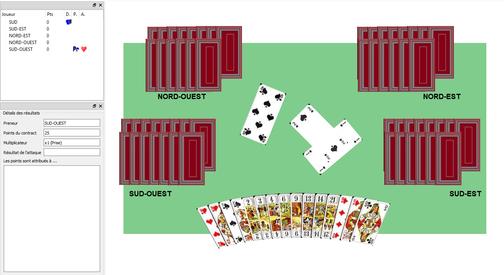

Description du jeu
Le jeu émule le jeu de Tarot, à 4 et 5 joueurs, en solo (un seul joueur humain). Les règles du Tarot sont celles décrites depuis le site de la Fédération Française de Tarot.
( only in  )
)
Le jeu émule le jeu de Tarot, à 4 et 5 joueurs, en solo (un seul joueur humain). Les règles du Tarot sont celles décrites depuis le site de la Fédération Française de Tarot.
Le jeu n'est pas activement en cours de développement, étant donné que je me concentre sur d'autres jeux.
[ ] | jeu: developpement de l'IA |
[ ] | rendu: améliorer la scène de fond. |
[ ] | son: bruitage et musique |
[ ] | jeu: ajouter d'autre mode de jeu (variante du Tarot) |
L'interface a été complètement refaite en utilisant ma propre librairie (TRE), construite au fur-et-à-mesure en mettant en commun les parties récurrentes de mes jeux. Le coeur du jeu est stabilisée. L'intelligence artificielle a été améliorée, mais encore loin de l'objectif final.

Le prototype a été développé en utilisant Qt, qui est une librairie d'interface utilisateur. Cela a permi aussi de créer le coeur du jeu (en C++), qui contrôle le déroulement des parties.
